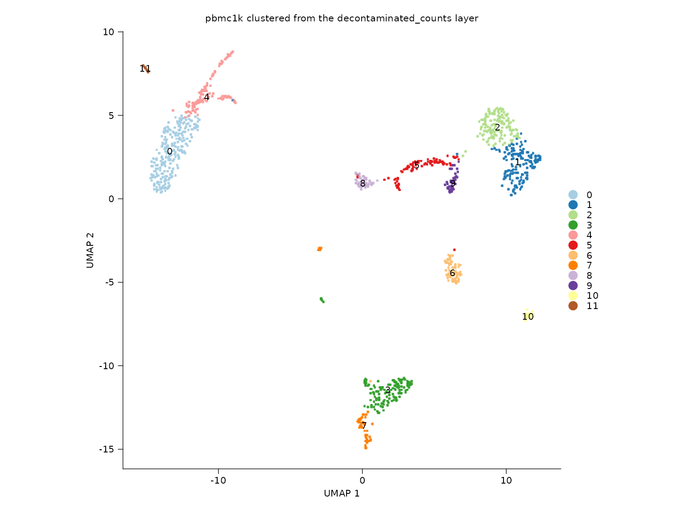
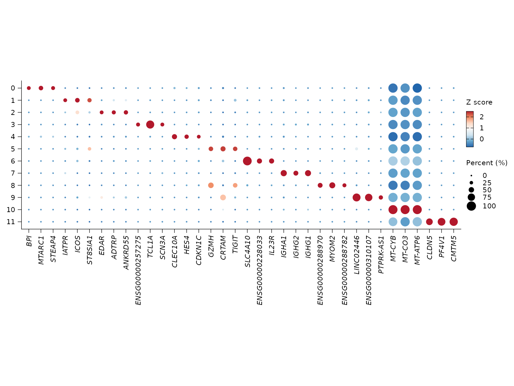

Layer-aware workflow
Songqi Duan
duan@songqi.org Source:vignettes/layered-workflows.Rmd
layered-workflows.RmdThis article demonstrates three Shennong behaviors that are important in modern multi-layer Seurat workflows:
- automatic species inference when
speciesis not provided - running analysis from a non-default count layer
- storing DE metadata in
object@misc$de_results
Automatic species inference
The count matrix is initialized without an explicit
species argument, but Shennong still infers the species
from feature names using hom_genes and common mitochondrial
patterns.
knitr::kable(
tibble::tibble(
object = c("raw_counts", "pbmc_inferred"),
species = c(inferred_species, sn_get_species(pbmc_inferred))
)
)| object | species |
|---|---|
| raw_counts | human |
| pbmc_inferred | human |
Layer-aware clustering
The object below is clustered from the
decontaminated_counts layer rather than the default
counts layer.
sn_plot_dim(
pbmc_layered,
reduction = "umap",
group_by = "seurat_clusters",
label = TRUE,
show_legend = FALSE,
title = "pbmc1k clustered from the decontaminated_counts layer"
)
Stored differential expression metadata
sn_find_de(..., return_object = TRUE) stores both the
marker table and the analysis metadata required for later reuse in
plotting and enrichment.
knitr::kable(de_summary)| field | value |
|---|---|
| schema_version | 1.0.0 |
| package_version | 0.1.1 |
| analysis | markers |
| group_by | seurat_clusters |
| rank_col | avg_log2FC |
| p_col | p_val_adj |
| n_genes | 15690 |
Reusing stored markers
sn_plot_dot(
pbmc_layered,
features = "top_markers",
de_name = "cluster_markers",
n = 3
)